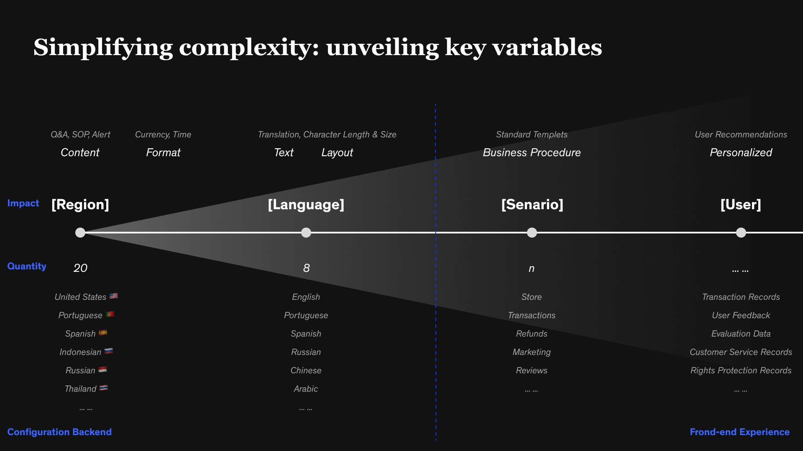
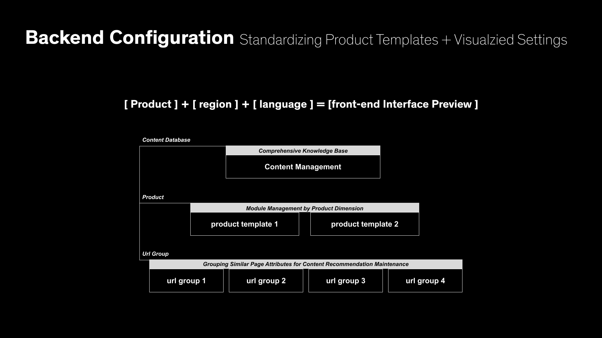

Re-Architecting Alibaba Help Center for Global Consistency
Alibaba’s Help Center serves millions of merchants daily across Taobao, Tmall, and global marketplaces such as AliExpress and Lazada. However, years of product growth had left the information system fragmented, with inconsistent categories, duplicated content, and unclear pathways.
I led a year-long redesign to reconstruct the Help Center’s information architecture and develop a globalization strategy that could adapt across regions. The goal was to make information findable, understandable, and solvable — while ensuring consistency for a multilingual, multi-market ecosystem.
Domestic Site (China)
The original Help Center had over 3,000 scattered articles, many of which were ambiguously classified. For example, “Shipping” could appear under both Orders and Logistics, and “Refund” was nested differently across departments. Users frequently got lost, lowering self-service rates and increasing support costs.
International Expansion
When Alibaba began rolling out localized Help Centers, simple translation proved insufficient. Each region required different taxonomy, tone, and cultural framing — for instance, “Transaction” in English vs. “Trade” in Chinese, or payment methods differing by market. Visual alignment also became complex: languages like Thai or Spanish expanded text length by 30–50%, breaking layouts designed for Chinese.
Mixed-Method Study
To rebuild from a user perspective, I conducted a hybrid card sorting + interview study with 16 Taobao merchants across varying experience levels. Participants were asked to categorize help topics and explain their reasoning, revealing where copywriting and structure failed to match mental models.
Findings:
- Merchants categorize help topics by goal, not internal platform structure.
- Ambiguous labels (“market,” “industry,” “promotion”) caused hesitation and misinterpretation.
- Certain topics required dual classification (e.g., “Live Streaming” belongs to both Content and Marketing).
Structural Insight
The Help Center is not an isolated product; it mirrors the merchant service journey. By mapping merchant tasks (listing, transaction, fulfillment, after-sales), we derived a top-level structure consistent with real business workflows.
Process
- Inventory & Audit — Identified redundant and misaligned topics.
- Main Thread Extraction — Rebuilt taxonomy around core merchant events.
- Prototype IA — Created visual maps of category relationships to align product and content teams.
- Validation — Conducted tree tests to verify navigation logic and comprehension.
Solution
- Reorganized Help Center into four main domains: Listing, Orders & Delivery, Payments, Policy & Disputes.
- Introduced semantic tagging to handle cross-linked content (e.g., “Shipping” dynamically linked to both Order and Logistics).
- Simplified navigation depth from 5 to 3 levels, increasing findability by 40%.
Beyond presenting the new taxonomy, I also established a quantitative evaluation framework to continuously monitor the system’s usability and content health.

Three key indicators were defined:
- Categorization Accuracy – the percentage of correctly matched topics during user tests.
- Comprehension Clarity – time and confidence score when users identified the correct category.
- Copy Readability & Label Precision – semantic clarity score derived from hesitation and misclassification patterns.
Each metric was tracked through periodic card-sorting validation and A/B monitoring in production. This allowed the product team to detect weak or ambiguous nodes early and iteratively refine taxonomy and labeling rules.
Example:
- “Marketing” renamed to “Marketing / Promotion” to avoid overlap with “Traffic”.
- “Industry Market” replaced with “Supply Market”.
- “Warehouse & Logistics” separated from “Orders / After-Sales”.
The metrics became a long-term governance mechanism, ensuring the IA could evolve as new product modules and business categories emerged.
With the domestic IA stabilized, we scaled it for international markets through a global–local design framework.
Key Challenges
- Semantic equivalence: Terms carried different meanings across languages.
- Cultural adaptation: Some help content was irrelevant outside China (e.g., local tax rules, refund regulations).
- Visual elasticity: UI spacing, truncation, and typographic rhythm needed flexible adaptation.
Strategy
Global Core, Local Extensions
- Standardized the first two levels of navigation globally.
- Allowed regions to add localized subcategories for tax, payment, and logistics.
Semantic Localization, not Literal Translation
- Developed bilingual mapping tables to preserve meaning, not word-for-word translation.
- Example: “Supply Market” → “Vendor Sourcing” to align with Western terminology.
Visual and Layout Guidelines
- Defined rules for multilingual typography, spacing, and truncation.
- Integrated these behaviors into the design system for automatic scaling.
Collaborative Governance
- Worked with PMs, translators, and regional designers to unify tone and UX consistency.
- Resolution rate increased from 52% → 81%
- Search-to-answer time reduced by 35%
- Framework adopted by 20+ localized sites (AliExpress, Lazada, Trendyol, etc.)
- Reduced content maintenance redundancy by 40%
- Recognized internally as a benchmark project within Alibaba’s merchant experience system
This project taught me that information architecture is the backbone of self-service UX, and globalization is not about translation — it’s about meaning and empathy. The same concept can look, sound, and feel different across cultures, yet still belong to one consistent system.
Designing for scalability and cultural nuance helped me understand how clarity builds trust, and flexibility builds connection.